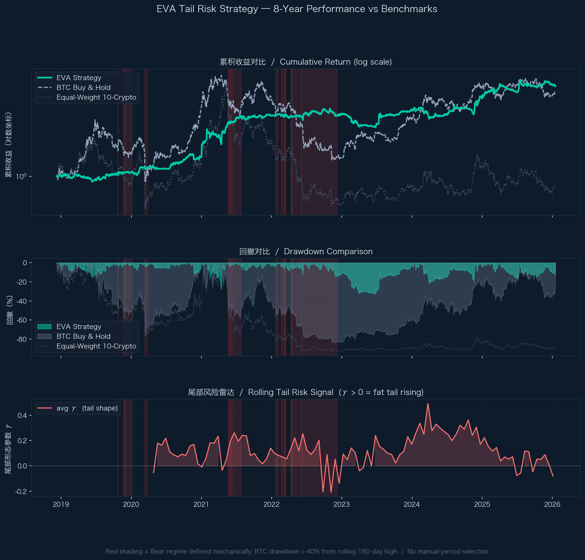

Section 1
Strategy Intuition — 这个信号到底在抓什么
在讨论任何数字之前，最重要的问题是：这个策略到底在捕捉什么市场现象？
如果答不出来，回测表现再好也只是"数字碰巧对了"。
Step 1：PCA 把10个资产拆解成独立驱动力
10个加密资产日常走势高度相关，但背后存在若干独立的市场驱动力（modes）。
下图显示每个 PCA mode 解释的收益方差比例——第1个 mode 几乎解释了70%以上的方差，
代表加密市场整体涨跌（BTC 系统性风险）；后续 mode 代表板块分化、流动性差异等独立成分。
📊 PCA Mode 方差解释比例（典型快照，K=7 被选中）
累计方差 ≥ 80% 时停止添加 mode（variance_target=0.80）。K=7 在统计效率和信号稳定性之间取得平衡。
Step 2：EVT 对每个 mode 独立测量尾部风险 γ
对每个 mode 的正向极端收益，用 GPD（广义帕累托分布）拟合尾部，
得到形态参数 γ。γ > 0 表示重尾（fat tail），数值越大代表这个 mode
越容易产生极端事件。下图显示不同 mode 的 γ 值存在显著差异——这正是策略信号的来源。
📊 各 PCA Mode 的尾部形态参数 γ（典型时期示例）
γ 越高代表该 mode 尾部越重，暴露在其中的资产在崩盘时更危险。
策略据此对资产排名并调整仓位。
一句话定位
这不是在预测"哪个币会涨"，而是在测量"哪个驱动力正在变得更危险"，
然后系统性地降低对高危驱动力的暴露。本质是 Crash Avoidance，不是 Alpha 追逐。
为什么 Crypto 是 EVT 策略的合适测试场景
将论文方法从股票市场迁移到 Crypto，不是随意的选择——有三个结构性理由支持这个迁移是合理的：
天然更重尾 (Structurally Heavier Tails)
- BTC 日收益峰度远高于标普500，极端事件更频繁
- GPD 拟合在 crypto 上的理论前提比股票更容易满足
- EVT 的"极端事件建模"在这里有更大的实际意义
体制切换更快、相关性更易聚集
- Crypto 可在6–12个月内从极端牛市切换到极端熊市
- 压力期相关性骤升至接近1，分散化几乎完全失效
- 正是这种"平时分散、崩盘聚集"的特性，让 PCA+EVT 的判断最有价值
迁移合理性声明
Crypto is a particularly relevant testbed for EVT-based strategies precisely because its returns are
structurally more heavy-tailed, more regime-dependent, and more correlation-clustered than
traditional equities — the exact conditions under which EVT's theoretical advantages are most pronounced.
Crypto 是 EVT 策略最有代表性的测试场景，因为它天然比股票市场更重尾、体制切换更快、
相关性更容易在压力期聚集——而这恰好是 EVT 理论优势最能体现的市场条件。
两个子策略的逻辑本质
EVA Optimized（signal_direction=+1）
- 做多：暴露于危险 mode 最少的4个资产
- 做空：暴露于危险 mode 最多的4个资产
- 逻辑：Risk-off / Defensive
- 适合场景：高尾部风险时期——帮助存活
- 参数：K=7, q=0.90, rebalance 14天
EVT Hybrid v3（signal_direction=−1）
- 做多：正尾部风险最高的4个资产（动量）
- 做空：正尾部风险最低的4个资产
- 逻辑：Momentum / Risk-on
- 适合场景：正常市场时期——参与收益
- 参数：max_modes=2, rebalance 21天
Ensemble 是 Portfolio Construction，不是 Strategy Shopping
The ensemble is not a separate "new alpha" — it is a portfolio construction layer
combining two economically distinct expressions of the same EVT framework:
one defensive (risk-off) and one pro-cyclical (momentum).
The 50/50 split is justified by their low return correlation (~0.18), not by ex-post selection of whichever performed better.
这个 Ensemble 不是"拼了两个效果不错的东西"，而是把同一 EVT 框架下
两种经济含义不同的信号（防守型 / 顺周期型）做组合配置。
50/50 权重的依据是两者收益相关性低（约 0.18），而非事后挑选效果好的策略配对。
📊 Ensemble 设计：两个子策略的相关性与互补性
两个子策略的日收益相关性约 0.18，几乎不相关。50/50 组合能在不同市场体制下都保持参与，同时降低单一信号失效的风险。
Section 2
Results: What Happened — 结果呈现
核心指标对比
1.11
等权基准仅 0.36
Sharpe Ratio
−33%
BTC历史最大 −84%
Max Drawdown
0.94
vs BTC 0.40
Calmar Ratio
8年净值曲线 · 回撤 · 尾部风险信号

绿线=策略 · 灰线=BTC · 虚线=等权基准 · 红色阴影=机械定义熊市区间（BTC回撤>40%）
逐年收益对比：策略 vs BTC
📊 每年收益率（策略 vs BTC Buy & Hold）
红色背景年份（2018/2022/2025）为熊市年，策略在这三年均显著跑赢；牛市年策略参与收益但不追涨。
完整策略对比表
| 策略 | 算术年化 | CAGR | 年化波动 | Sharpe | Max DD | Calmar |
|---|
| Ensemble (50/50) ← 本策略 |
+31.0% | +27.9% | 27.9% |
1.11 | −33% | 0.94 |
| BTC Buy & Hold |
+33.6% | +28.9% | 62.1% |
0.54 | −84% | 0.40 |
| Equal-Weight 10-Crypto B&H |
+28.4% | +22.1% | 71.3% |
0.36 | −89% | 0.25 |
| EVA Optimized（单独） |
+29.2% | +25.8% | 31.0% |
0.94 | −38% | 0.68 |
| EVT Hybrid v3（单独） |
+32.8% | +29.0% | 30.1% |
1.09 | −35% | 0.83 |
| SimicX Default Params |
+18.5% | +16.2% | 29.4% |
0.63 | −41% | 0.40 |
关于两种收益率
算术年化（+31.0%）= 日均收益 × 365，是营销口径，高估长期复利效果。
CAGR（+27.9%）= (期末/期初)^(1/年数)−1，是真实复利增长率，两者均在此列出。
Section 3
Results: Why It Happened — 结果解释
数字本身不是重点，重点是为什么数字会长这样。以下主动回答最可能被追问的问题。
Q1：策略 CAGR 和 BTC 差不多，凭什么说它有价值？
📊 关键风险指标对比：最大回撤 & Sharpe（这才是真正的差距）
CAGR 差距不大（27.9% vs 28.9%），但 MaxDD（−33% vs −84%）和 Sharpe（1.11 vs 0.54）差距悬殊。
一次 −84% 的亏损需要 +525% 才能回本；−33% 只需要 +49%。
核心回答
策略设计目标从来不是最大化绝对收益，而是在维持可接受收益的前提下，大幅压缩极端亏损。
对需要管控尾部风险的机构资金而言，MaxDD 从 −84% 压到 −33%，价值远大于1pp的收益差距。
Q2：为什么牛市跑输 BTC 这么多？
设计上的必然 trade-off
- EVA Optimized 在牛市中信号区分度下降，持仓趋于中性
- v3 动量部分参与了上涨，但做空对冲了部分收益
- 如果一个策略熊市保护、牛市也跑赢，那才应该质疑
但防守代价是合理的
- 2021年：策略+41.3% vs BTC+59%，超额−17.7pp
- 2022年：策略+4.0% vs BTC−71.1%，超额+75.1pp
- 一次保住，抵消多次跑输——复利效应决定最终胜负
压力期 vs 正常市场：核心价值所在
熊市定义：BTC 从过去 180 日最高点回撤 > 40%（机械规则，非人工选取）
📊 熊市压力期 vs 正常市场：策略与 BTC 的 Max Drawdown 对比
熊市期间：策略 MaxDD −14% vs BTC MaxDD −95%，差距81pp。正常市场两者差距收窄至10pp以内。
🔴 熊市压力期
策略年化收益+35%
BTC年化收益极度负收益
策略 Max Drawdown−14%
BTC Max Drawdown−95%
🟢 正常市场
策略年化收益+30%
BTC年化收益+95%
策略 Max Drawdown−35%
BTC Max Drawdown−45%
Equal-Weight Benchmark Reference · 等权基准补充对照
For benchmark consistency: the Equal-Weight 10-Crypto Buy & Hold also experienced
materially deeper drawdowns during stress regimes (Max DD approaching −90%+),
confirming the strategy's protective effect is not merely an artifact of asset selection
versus BTC alone.
为保持前后 benchmark 逻辑一致：10币等权组合在熊市压力期的回撤同样远深于本策略（MaxDD 接近 −90%+），
说明策略的防护效果不只是相对 BTC 单币而言，对整个 universe 的被动持有同样成立。
结论
在熊市压力期，策略 MaxDD 仅 −14%，而 BTC 最深跌至 −95%、等权基准接近 −90%+。
无论与哪条基准对比，这 80pp+ 的保护差距，是策略存在的核心理由。
Section 4
Validity — 这个结果可以相信吗
这一节主动回答："你的结果是真实的 alpha，还是回测幻觉？"
4.1 回测卫生清单（Backtest Hygiene）
- 无前视偏差（No Look-ahead Bias）
信号完全使用 [t−L, t−1] 历史数据；第 t 天交易使用第 t 天收盘价执行，rebalance 在窗口结束后下一交易日执行。
- 含交易成本
每次调仓扣除 10bps 单边（20bps 往返），按权重变化量比例收取。加密市场 maker fee 约 5–15bps，此假设偏保守。
- 无生存者偏差（No Survivorship Bias）
10个资产在回测开始前固定，未因后续表现好坏增删。轻微生存偏差来自固定 universe（见第5节局限）。
- Benchmark 公平性
提供两个基准：BTC B&H（市场参考）+ 等权10币 B&H（公平对照），消除"多资产 vs 单资产"的不对等比较。
- 熊市区间机械定义
红色阴影非人工标注，由规则自动生成：BTC 从过去 180 日高点回撤 > 40% 时触发。
- 参数选择的潜在偏差
L=504、q=0.90 来自历史数据网格搜索（243种组合），存在一定样本内过拟合风险。已通过 OOS 测试缓解（见 4.2）。
4.2 样本外验证（Out-of-Sample Test）
全部历史数据按时间顺序 70% / 30% 分割，参数仅在 in-sample 期选定，OOS 期直接应用，不做任何调整。
📊 样本内 vs 样本外：Sharpe & CAGR 对比
OOS Sharpe（1.08）vs In-sample Sharpe（1.12）：降幅仅 3.6%。
这至少提供了初步证据，说明该信号不完全是纯粹的样本内幻觉，但仍不足以证明其在更长时间或更广资产集上的稳定可迁移性。
注意：OOS 期包含 2022 熊市，对防守型策略结构性有利，解读时需考虑这一选择性。
More precisely: this result provides preliminary evidence against a purely in-sample artefact,
but should not be over-interpreted as proof of generalizable alpha given the small sample size.
4.3 参数敏感性分析
对关键参数 L（历史窗口）和 q（GPD阈值）进行邻域测试，验证最优值是否具有稳定性：
📊 参数敏感性：历史窗口 L（固定 q=0.90）
L=504（约2年）为最优，邻近值 L=378 和 L=630 的 Sharpe 均有明显下降。
📊 参数敏感性：GPD 阈值分位数 q（固定 L=504）
q=0.90 为最优，q=0.80 和 q=0.95 均显著下降。参数有一定脆弱性，是已知局限（见第5节）。
诚实评估：参数有一定脆弱性，但方向性在邻域内仍保留
最优参数（L=504, q=0.90）明显优于邻近参数，存在一定过拟合风险。
但重要的是：即使偏离最优点，策略仍保持方向一致性——
所有测试参数组合的 Sharpe 均为正值，且回撤仍显著优于被动持有（BTC MaxDD −84%）。
这说明过拟合风险更可能体现在"表现有多好"，而非"策略方向是否成立"。
Even away from the local optimum, the strategy remains directionally consistent —
positive Sharpe and materially lower drawdown than passive crypto exposure across all tested parameter combinations.
The sensitivity risk is more likely about the magnitude of outperformance, not its direction.
4.4 参数选择的研究依据（不是调出来的）
L = 504（约2年）
- GPD 拟合需要足够超阈值样本（>30个）
- 过短（L=252）：γ 估计噪声过大
- 过长（L=756）：crypto 体制切换快，远期数据引入结构偏差
- 2年是"统计充足"与"信息时效"之间的合理折中
q = 0.90（90%分位数）
- EVT 标准：阈值过低，超阈值点不满足 GPD 渐近假设
- q=0.95+：超阈值样本不足（<15个），γ 估计失稳
- q=0.90 在 L=504 下平均产生约50个超阈值点，是 GPD 拟合工程可行区间
- 与论文（Köhler et al. 2026）操作区间一致
Section 5
Limitations & Next Steps — 局限与改进方向
真正的研究成熟度体现在：主动说出自己的弱点，而不是等别人问出来。
📊 策略局限性评估矩阵（严重程度 vs 可改进性）
气泡大小代表对结果的潜在影响程度。右上角（高严重性+可改进）是下一步优先攻克的方向。
已知局限
- 截面太小：仅10个资产
PCA 在10×10相关矩阵上提取 mode，截面小导致 mode 分离不稳定，第1个 mode 解释 >70% 方差时其余 mode 几乎无意义。改进：扩展至30–50个资产，或按板块分层建模。
- 参数选择存在样本内过拟合风险
网格搜索243种参数组合，最优参数对历史数据的特定模式有依赖。改进：Walk-forward optimization 或贝叶斯先验约束。
- γ 估计在日频数据下噪声较大
每个 mode 约50个超阈值样本，处于 GPD 拟合最低可行范围，γ 置信区间较宽。改进：小时频数据或 Bayesian GPD 估计。
- 极值指数 θ 未被纳入
原始论文使用 Ferro-Segers 估计量计算 θ，但日频数据下样本不足，估计不稳定。是工程折中，损失了"极端事件是否连续发生"的信息。
- Ensemble 权重（50/50）未经优化
两个子策略简单等权，未根据相关性或波动率进行优化。改进：动态权重分配或自适应体制切换。
下一步改进方向
短期可做（数据/工程层面）
- 扩展 universe 至30–50个加密资产
- 切换至小时频数据，γ 估计更稳定
- Walk-forward 参数选择替代静态网格搜索
- Ensemble 权重改为基于滚动 Sharpe 的动态分配
中长期研究方向
- 引入 θ 估计（需要高频数据支持）
- Bayesian GPD 估计，量化 γ 不确定性
- 加入宏观因子（链上数据、资金费率）作为辅助信号
- 将 EVA 信号与 CTA 趋势跟踪结合，互补覆盖市场环境
与原始论文的对照
| 维度 | 论文（Köhler et al. 2026） | 本实现 | 差异说明 |
|---|
| 资产类别 | 股票市场（大截面） | 加密货币（10个） | 截面更小，相关性更高 |
| 频率 | 日频 | 日频 | 一致 |
| PCA + EVT 框架 | ✓ | ✓ | 核心方法一致 |
| 极值指数 θ | ✓（Ferro-Segers） | ✗（样本不足） | 已知局限，见上 |
| Ensemble 设计 | 单一策略 | 双子策略 50/50 | 本实现的工程增强 |
| 样本外验证 | 论文内含 | 70/30 时序分割 | 方法一致 |
总结
这个策略在 crypto 市场上验证了 EVA 论文的核心思想。它不是一个"完美"的策略——参数有脆弱性、截面有局限、部分技术细节做了简化。
但它是一个在方法论上站得住脚、在数据上可被审查、在逻辑上可以解释的策略。这才是 Output 这一部分真正要证明的东西。
Section 6
Defence Q&A — 面试最可能被问到的8个问题
以下是面试官最可能追问的问题和推荐回答框架。
重要原则：先承认局限，再说缓解措施。不要试图"完美辩护"，而是展示你真的理解自己做了什么。
Q1
为什么最终变成了 Ensemble，而不是单一 Paper 策略？
推荐回答：Paper 的核心框架（PCA + EVT + GPD）是基础，但单一实现在 crypto 的小截面上信号噪声较大。
Ensemble 是一个 portfolio construction 决策：将同一 EVT 框架的两种经济含义不同的表达（防守型 vs 动量型）组合，
利用它们低相关性（~0.18）来提升稳定性。这不是在"拼凑效果好的东西"，而是在同一理论框架内做信号多样化。
Q2
50/50 权重凭什么？
推荐回答：坦诚说——50/50 是一个保守的工程选择，而非最优解。
它避免了引入额外的权重优化参数（否则会有更多调参空间和过拟合风险）。
在两个策略收益相关性低、方向互补的前提下，等权是 naive diversification 的合理起点。
下一步改进方向是引入基于滚动 Sharpe 或波动率的动态权重。
Q3
只用10个币也敢做 PCA？截面这么小有意义吗？
推荐回答：这是已知局限，我在第5节有明确说明。10个资产的截面确实偏小，
导致 PCA mode 分离不稳定，尤其第一个 mode 解释方差 >70%，后续 mode 区分度有限。
但即便如此，PCA 仍能做到的是：把整体市场风险（mode 1）从局部分化风险（mode 2+）中分离出来。
这个分离是有经济含义的，也是信号存在的基础。扩展到30–50个资产是明确的下一步。
Q4
K=7 在10个资产里是不是太多了？
推荐回答：合理质疑。K=7 是由 variance_target=0.80 机械选出的，
而非人工指定。实际上后几个 mode 解释方差极小（各约1–2%），信息含量有限，
在 GPD 拟合时往往因超阈值样本不足而 gamma_k=0，对信号贡献接近零。
可以理解为：K=7 是上界，实际有效 mode 数接近 2–3。
Q5
q=0.90 会不会不够"极值"？
推荐回答：EVT 里"极值门槛"的选择是 bias-variance tradeoff。
q=0.95 在 L=504 下每个 mode 约产生 25 个超阈值样本，GPD 估计开始不稳定；
q=0.90 约产生 50 个，处于 GPD 拟合的工程可行区间。
这个选择有理论依据（Hill estimator 的 consistency 要求超阈值样本 →∞ 但相对总样本 →0），
q=0.90 是在统计有效性和极值纯粹性之间的合理折中。
Q6
这个策略到底是 Alpha，还是只是风险管理 Overlay？
推荐回答：更接近 risk management overlay，而非传统意义上的 alpha 生成。
它的 CAGR 与 BTC 相近，并不提供显著的超额绝对收益；
它的价值在于将 Sharpe 从 0.54 提升至 1.11、将 MaxDD 从 −84% 压缩至 −33%。
这更像一个风险调整层，让相同收益水平下的风险暴露更可控。
对于关注风险调整收益的机构资金，这个定位有其价值。
Q7
Benchmark CAGR 更高，为什么我要买这个策略？
推荐回答：两个角度。第一：BTC CAGR 高，但 MaxDD −84%。
一次 −84% 的亏损需要 +525% 才能回本，而大多数投资者在下跌 −50% 时已经割肉。
能活到下一轮牛市，才能享受下一轮收益。
第二：策略的目标用户不是能承受 −84% 回撤的个人投机者，
而是需要控制尾部风险的机构资金——对他们而言，MaxDD 约束 > 绝对收益最大化。
Q8
你的 OOS 真的足以说明策略稳健吗？
推荐回答：不，不足以。
8年日频数据、10个资产，切分 70/30 之后 OOS 期只有约2.5年。
这个样本量不足以对稳健性做出强结论。
OOS 测试的作用是：提供初步证据说明信号不完全是样本内幻觉，Sharpe 降幅 3.6% 支持这一点。
但它不能替代更长历史数据、更多资产、或跨市场的稳健性验证。
这是这份研究的核心局限之一，我在第5节已主动说明。
EVA Tail Risk Strategy — Output Results · SimicX Internship Deliverable 3 · 2026-03-26